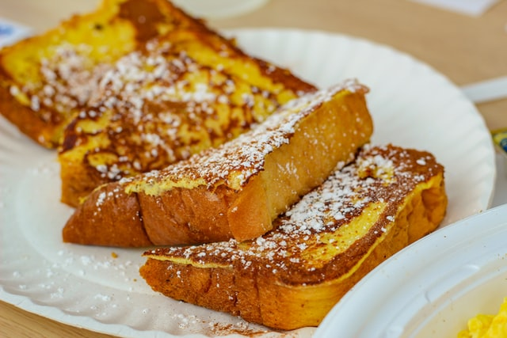

French Toast

Description
French toast is a great way to take advantage of old bread
Ingredients
- 2 slices breadbread
- 1/2 cup milk
- 1 egg
- 1 tbsp sugar
- 1 tbsp butter
- Optional: cinnamon, allspice, vanilla
Steps
- Combine and mix milk, egg, sugar, and optional spices in a mixing bowl until it has a custardy like texture
- Soak bread in egg mixture for 15 minutes, alternating sides
- In a frying pan, melt your butter
- Place bread in frying pan until cooked, approximately 4 minutes each side